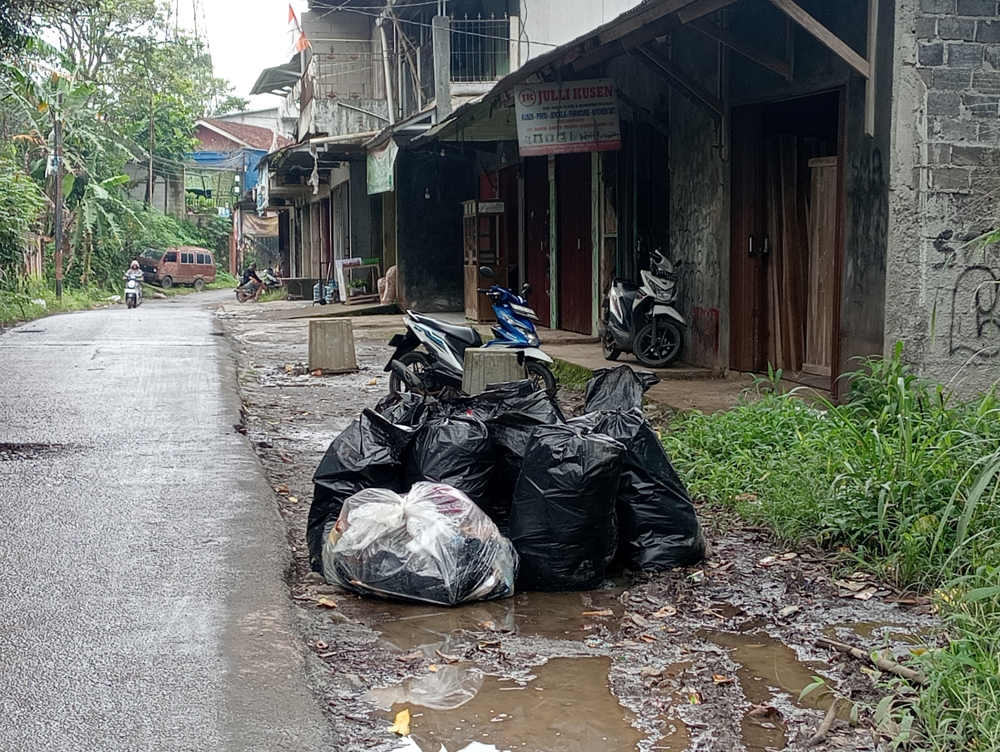
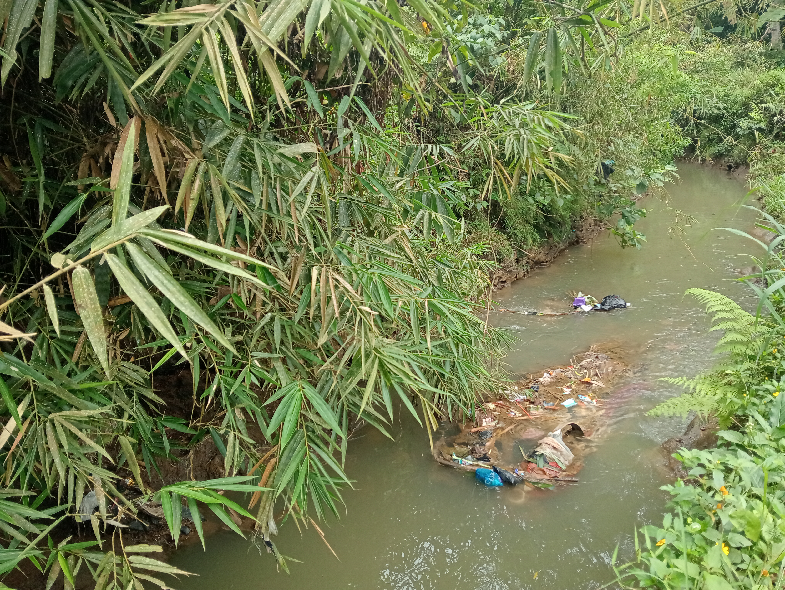
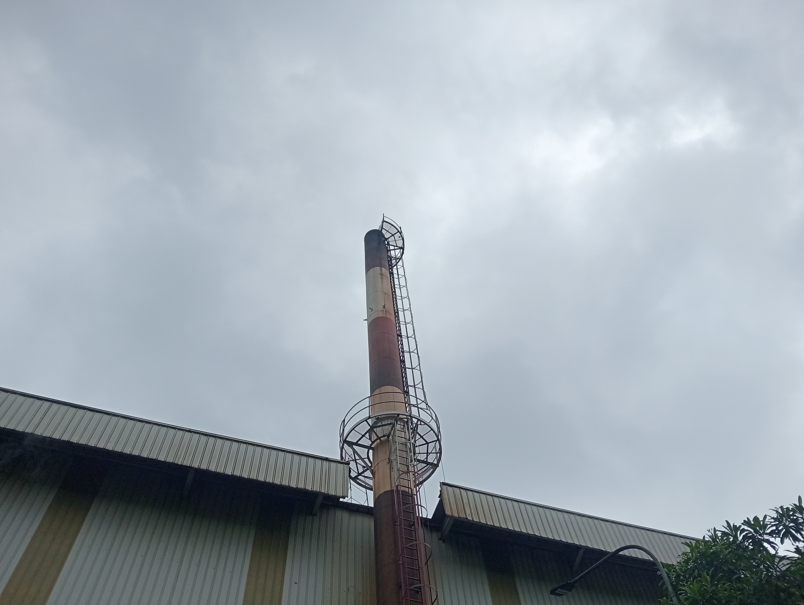

1. Pencemaran Tanah

Pencemaran tanah merupakan salah satu masalah lingkungan yang sering terjadi akibat aktivitas manusia yang tidak bertanggung jawab. Tanah yang seharusnya menjadi tempat hidup berbagai organisme justru tercemar oleh limbah rumah tangga, limbah industri, dan sampah anorganik seperti plastik, kaleng, serta bahan kimia berbahaya. Sampah-sampah tersebut sulit terurai dan dapat merusak kesuburan tanah dalam jangka panjang.
Dampak pencemaran tanah sangat luas, salah satunya adalah menurunnya kualitas hasil pertanian. Tanaman yang tumbuh di tanah tercemar dapat menyerap zat berbahaya sehingga berisiko bagi kesehatan manusia. Selain itu, pencemaran tanah juga dapat mencemari air tanah yang digunakan masyarakat untuk kebutuhan sehari-hari. Oleh karena itu, diperlukan kesadaran bersama untuk mengelola sampah dengan baik dan mengurangi penggunaan bahan berbahaya.
2. Pencemaran Air

Pembuangan sampah yang tidak terkelola dengan baik ke sungai merupakan masalah yang sering ditemui di lingkungan sekitar. Banyak masyarakat yang masih membuang sampah rumah tangga seperti plastik, sisa makanan, dan kemasan minuman ke sungai karena dianggap praktis. Padahal, kebiasaan ini dapat menyebabkan penyumbatan aliran air.
Sungai yang tersumbat sampah akan memicu terjadinya banjir, terutama saat musim hujan. Selain itu, air sungai yang tercemar dapat menimbulkan bau tidak sedap dan menjadi tempat berkembangnya berbagai penyakit. Untuk mengatasi masalah ini, masyarakat perlu dibiasakan membuang sampah pada tempatnya serta menerapkan sistem pengelolaan sampah yang lebih baik, seperti memilah sampah organik dan anorganik.
Sungai yang tersumbat sampah akan memicu terjadinya banjir, terutama saat musim hujan. Selain itu, air sungai yang tercemar dapat menimbulkan bau tidak sedap dan menjadi tempat berkembangnya berbagai penyakit. Untuk mengatasi masalah ini, masyarakat perlu dibiasakan membuang sampah pada tempatnya serta menerapkan sistem pengelolaan sampah yang lebih baik, seperti memilah sampah organik dan anorganik.
3. Pencemaran Udara

Pencemaran udara adalah kondisi ketika udara tercemar oleh zat-zat berbahaya sehingga kualitasnya menurun dan dapat mengganggu kesehatan makhluk hidup serta lingkungan. Pencemaran ini terjadi akibat masuknya polutan ke udara, baik yang berasal dari aktivitas manusia maupun proses alam.
Sumber utama pencemaran udara berasal dari asap kendaraan bermotor, pabrik dan industri, pembakaran sampah, serta kebakaran hutan. Gas buang seperti karbon monoksida (CO), sulfur dioksida (SO₂), nitrogen dioksida (NO₂), dan partikel debu sangat berbahaya jika terhirup dalam jangka waktu lama. Selain itu, asap rokok dan penggunaan bahan bakar fosil juga turut memperparah pencemaran udara.
Dampak pencemaran udara sangat luas. Bagi manusia, dapat menyebabkan gangguan pernapasan, asma, iritasi mata, penyakit jantung, hingga kanker paru-paru. Bagi lingkungan, pencemaran udara dapat merusak tanaman, mengganggu keseimbangan ekosistem, menyebabkan hujan asam, dan mempercepat pemanasan global.
Upaya untuk mengurangi pencemaran udara dapat dilakukan dengan cara menggunakan transportasi ramah lingkungan, menanam pohon, mengurangi pembakaran sampah, serta menggunakan energi bersih. Dengan menjaga kualitas udara, kita turut menjaga kesehatan dan kelestarian lingkungan untuk masa depan.